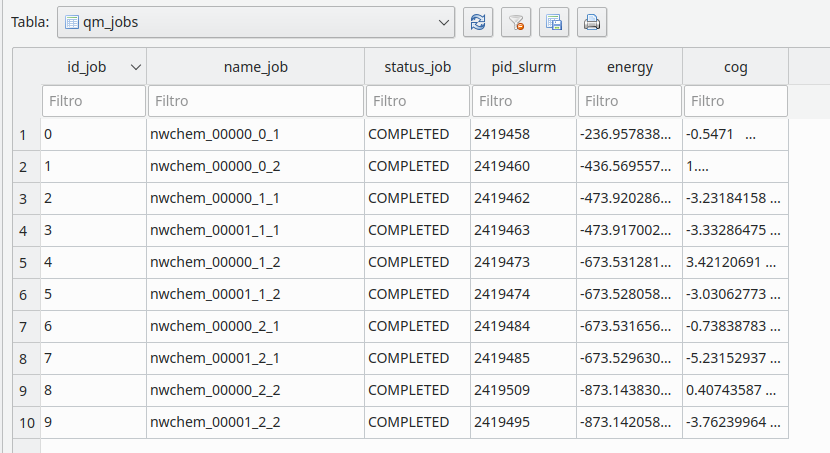

DBJobs¶
Overview¶
This class is used to create a SQLite3 database. This database keeps track of all QM jobs.
{kind=link}
Example¶
# Create a database if it does not exist
db1 = chi.DBjobs("out/test_02.db", logger=self.log)
# Create a table named qmjobs
success = db1.create_table_qmjobs()
# Insert some data in the table
sql_insert = "INSERT INTO qm_jobs ('id_job', 'name_job', 'cog') VALUES ({0:d}, '{1:s}', '{2:s}')". \
format(db_index, inputname, str(cog_list)[0:-1])
db1.insert_data(sql_insert)
# Close connection
db1.close_connection()
Methods¶
Checks if table |
|
Close the database connection |
|
Commits the database |
|
Create table |
|
Insert data in the datababase using a valid SQL sentence |
|
Returns the number of rows of the table |
|
Remove a row |
|
Remove table in the database |
|
Sort columns |
|
Update all rows of a certain column in the dictionary |
|
Update date by row using where |
API¶
-
class
chiripa.DBJobs.DBjobs(dbname, logger=None)[source]¶ Bases:
objectClass to represent the database of jobs
This class is used to keep track the QM jobs in the server. The database has a table called
qm_jobswith the following columns:id_job(integer): Primary key of the tablename_job(string): Name of the input file in the QM package. The pattern is <name_of_the_qm_package>_<identification>_<0,1,2>_<1,2> Example: nwchem_00024_0_1 (for segment 1) or gauss_00374_2_1 (for pair 2,1)status_job(string): Status of the job in the serverpid_slurm(integer): Job PID from slurm queue managementenergy(float): Electronic energy from the outputcog(list[3]): Center of geometry
Attributes
-
_con¶ Connecting to the SQLite database (sqlite3.Connection)
- Type
Connection
-
_cursor¶ Connection object to execute SQLite queries from Python. (sqlite3.Cursor)
- Type
Cursor
-
_logger¶ Logger to send messages
- Type
Logger
Methods
-
__init__(dbname, logger=None)[source]¶ Constructor of a DBjobs object
- Parameters
dbname (str) – Path to the database
logger (logger) – Logger to send messages
-
account_qm(tablename)[source]¶ Account for the total number of QM and the completed QM jobs in the database The format of the lists are:
total_qm_pairs = [2,2,2,2] complete_qm_pairs = [1,1,1,1] –> [segment_1_1, segment_1_2, segment_2_1, segment_2_2]
- Parameters
tablename (str) – Name of the table to find
- Returns
A tuple of two lists. The total_qm_pairs and complete_qm_pairs
-
check_for_table(tablename)[source]¶ Checks if table
tablenameexists- Parameters
tablename (string) – Name of the table in the database
- Returns
Trueif the tablename exists otherwiseFalse
-
create_table_qmjobs()[source]¶ Create table
qmjobsif it does not exist in the database- Returns
Trueif the table is created otherwiseFalse
-
insert_data(sql)[source]¶ Insert data in the datababase using a valid SQL sentence
If data does not exist, then insert into the database otherwise not insertion is done
Using a sql INSERT sentence
- Parameters
sql (string) – A valid sql sentence
- Returns
Trueif data are inserted otherwiseFalse
Example
sql_insert = “INSERT INTO qm_jobs VALUES ({0:d}, ‘{1:s}’, ‘CREATED’, ‘NULL’, ‘NULL’, ‘{2:s}’)”. format(self._db_index, inputname, str(cog_list)[1:-1]) db.insert_data(sql_insert):
-
number_of_rows(tablename)[source]¶ Returns the number of rows of the table
- Parameters
tablename (str) – Name of the table
- Returns
(int) Number of rows
-
remove_row(tablename, fieldname, id_job)[source]¶ Remove a row
- Parameters
tablename (string) – Name of hte table
fieldname (string) – Name of the column to delete
id_job (any) – Value for the fieldname
- Returns
Trueif the row is remove otherwiseFalse